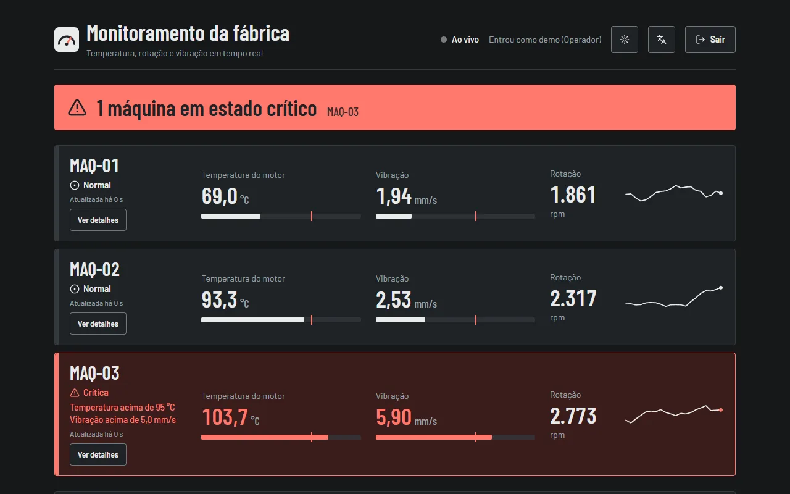
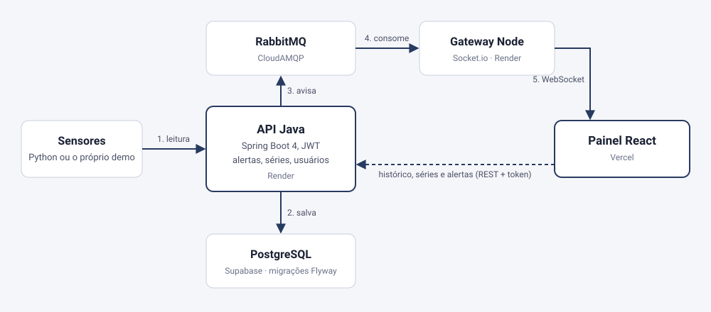
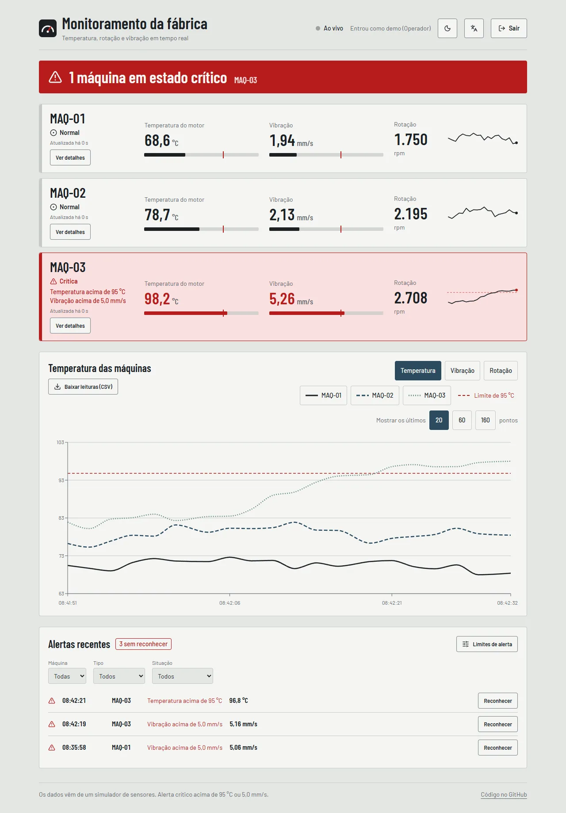
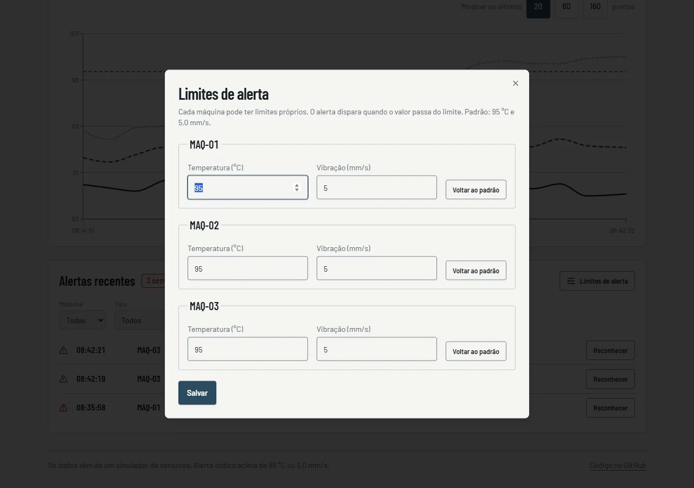
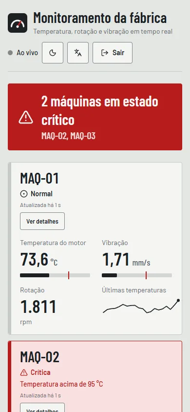

Plataforma IoT Industrial
Telemetria de máquinas em tempo real: sensores mandam leituras para uma API Java, uma fila avisa um gateway Node e o painel React mostra números, gráficos e alertas mudando sozinhos. Publicada em planos gratuitos, sem custo de infraestrutura.
Abrir o painel Ver o códigoA API roda num plano gratuito que dorme sem visitas. Na primeira abertura, a API pode levar cerca de 1 minuto para acordar. Enquanto isso, o painel mostra uma simulação feita no próprio navegador, com aviso na tela, e troca pelos dados reais quando a API responde.

Painel da demonstração pública, com telemetria simulada.
O problema
Uma fábrica tem máquinas que esquentam e vibram, e quem opera precisa saber na hora quando uma delas passa do limite, não depois. Isso exige receber muitas leituras por segundo, guardar o histórico, avisar a tela sem ela ficar perguntando o tempo todo e registrar quem viu cada alerta.
A solução
Uma plataforma em peças separadas, cada uma com um trabalho só: a API Java recebe e guarda a leitura, avalia os alertas e responde o histórico; o RabbitMQ leva o aviso adiante; o gateway Node entrega cada leitura ao navegador por WebSocket; o painel React mostra tudo, com perfis de acesso e tema claro e escuro.
Arquitetura

A API salva primeiro e avisa depois. Se a fila falhar, a leitura continua gravada e a resposta é 200: o tempo real é um extra, não uma condição para guardar o dado. Se o WebSocket não chegar, o painel percebe, mostra "Atualizando por consulta" e passa a buscar as leituras novas na API a cada 3 segundos.
O que o produto faz
Alertas guardados no servidor
Um alerta nasce só no momento em que a máquina passa do limite, não a cada leitura acima dele. Cada máquina tem o seu limite, e o operador marca o alerta como visto.
Três perfis de acesso
Administrador, operador e leitura. A regra fica na API (401 sem login, 403 sem permissão); o painel só esconde o que a pessoa não pode usar.
Histórico por período
1 hora, 6 horas ou 24 horas, calculado no banco em cerca de 100 pontos por máquina, com comparação entre máquinas.
Aviso no Discord ou Slack
Cada alerta novo pode virar uma mensagem, enviada em segundo plano para não atrasar a leitura.
"Simular falha"
Um botão no demo provoca uma falha numa máquina para quem visita ver o alerta nascer, com espera de 30 s para ninguém abusar.
Métricas e Grafana
Prometheus e Grafana sobem com um comando, com o painel pronto: leituras por máquina, alertas e falhas da fila.
Telas



Decisões e o que aprendi
Cada decisão grande tem uma página própria no repositório, com o que foi descartado e o que ficou de ruim: sete registros de decisão.
A demonstração que gerava 1.700 alertas por dia
A primeira versão do simulador sorteava cada leitura do zero, então a temperatura dava saltos e cruzava o limite o tempo todo: mais de 1.700 alertas em um dia e um gráfico em serrote. Troquei por um modelo que varia devagar em torno do normal, com falhas ocasionais que duram algumas dezenas de segundos, e passei a alertar só na passagem do limite.
O teste que o banco de teste não via
A série por período agrupa leituras em faixas de minutos com uma divisão inteira dentro da consulta. O banco em memória dos testes aceitava; o PostgreSQL real recusa a mesma conta com parâmetro. Por isso um grupo de testes roda num PostgreSQL real (Testcontainers) no CI, e as migrações também são provadas lá, partindo de um banco vazio e de um banco antigo.
Medir antes de otimizar a hospedagem
No plano gratuito, a primeira visita esperava mais de dois minutos (medi 147 s e 169 s). Medi a subida do Java e guardei no docker build um arquivo com as classes já lidas, além de subir só com o compilador rápido: a subida caiu para cerca de 62 s. O que não dá para resolver com código está dito no README: manter a API sempre acordada exige plano pago.
Uma chave de desenvolvimento em produção
Lendo o log do site no ar, vi que a API ainda usava a chave pública de desenvolvimento dos tokens, o que permitiria fabricar um token de administrador. Troquei por uma chave aleatória nos dois serviços e conferi que o login e o WebSocket continuam funcionando e que um token forjado leva 401.
Qualidade em números
Contagens de testes do painel (executados) e da API Java (anotações de teste no código) feitas em 10/11/2026; as demais medições são de 17/10/2026. O teste de carga rodou no GitHub Actions, com a API, o banco e a fila no mesmo servidor e pouco dado: mostra o desempenho do código, não o do site gratuito, que tem bem menos CPU. Lighthouse medido no build local do painel: desempenho 99 a 100, acessibilidade 100, boas práticas 96, SEO 100.